Spans 46km from Kwasa Damansara to Kajang, with 29 stations, including 7 underground.
The MRT train can accommodate 1200 passengers at any one time.
Long cables and wiring were used as part of the components to build the MRT Kajang Line 58 sets of trains; this is equivalent to the travelling distance from Kuala Lumpur to Penang, and back — 580km.
There are 42 CCTV cameras installed on each MRT train to ensure the safety and security of commuters.
Runs 9.5km underground through Kuala Lumpur; the rest is elevated.
Kwasa Damansara is now the terminal for both Kajang and Putrajaya Lines.
Opened in two phases: Phase One (Sungai Buloh to Semantan) in Dec 2016, fully operational by July 2017.
Design of the MRT Kajang Line elevated stations is based on the WAKAF.
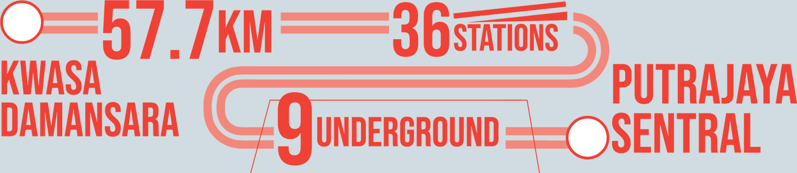
The 57.7km-long Putrajaya Line has 36 operational stations, of which 27 are elevated and 9 underground.
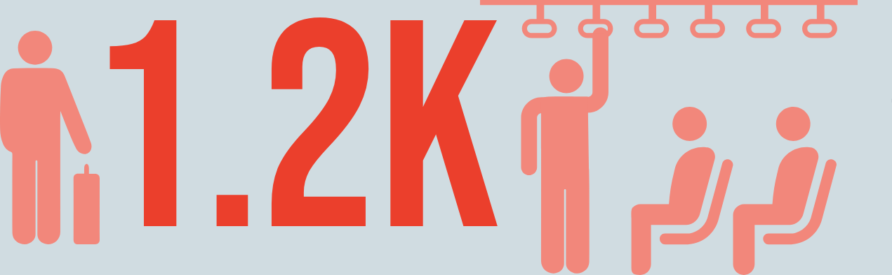
The MRT train can accommodate 1,200 passengers at any one time.
Runs 13.5km underground through Kuala Lumpur; the rest is elevated.
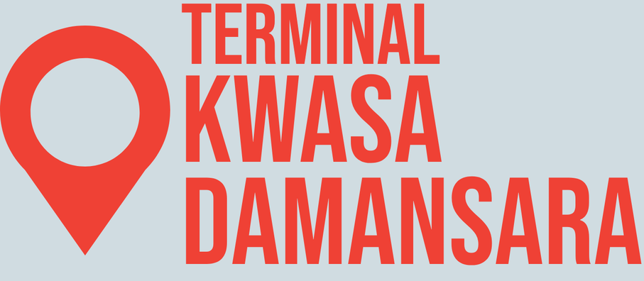
Kwasa Damansara is now the terminal for both Kajang & Putrajaya Lines.
Opened in two phases: Phase One (Kwasa Damansara to Kampung Batu) in June 2022, fully operational by March 2023.
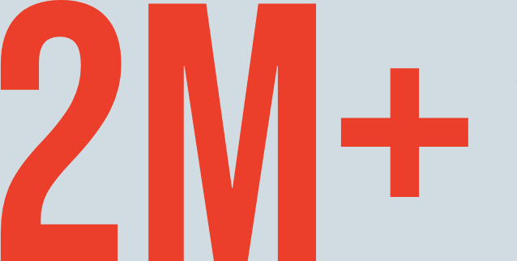
The Putrajaya Line corridor serves an estimated 2 million residents across the Klang Valley.
4km length with two stations, one in Bukit Chagar, Johor Bahru, Malaysia and one in Woodlands, Singapore.
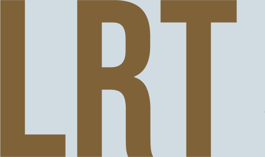
Link will be a modern Light Rail Transit (LRT) System: Provide high volume, fast and efficient transportation system between the two stations.
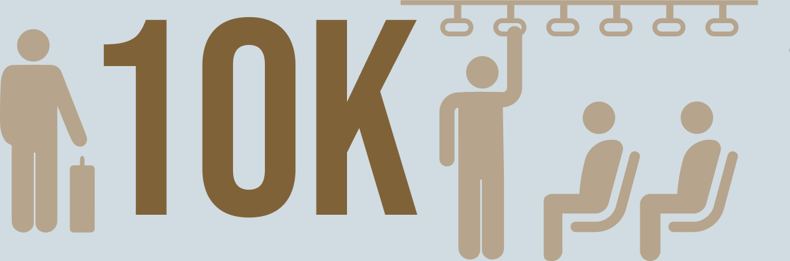
The system expects to carry up to 10,000 passengers per hour in each direction. Expected ridership of about 40,000 passengers per day upon opening.
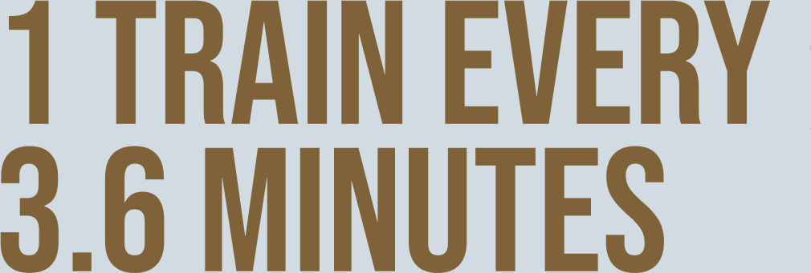
Trains run every 3.6 minutes during peak hours.
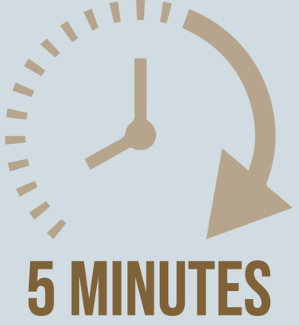
The cross-border journey between Bukit Chagar and Woodlands North will take about 5 minutes, with an estimated 20 to 25 minutes total time required for integrated ticketing and clearance.
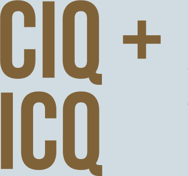
Unique info: Malaysian ICQ and Singaporean CIQ facilities will be co-located within the same building. This will allow the entire immigration process of leaving and entering both countries to be completed at the departing station.
RTS Link Project Maintenance Depot will be located at Wadi Hana, Johor Bahru.
RTS Link Project will be operated by RTS Operations Pte Ltd (RTSO).
The LRT Mutiara Line will connect key areas in Penang, improving address and easing congestion.
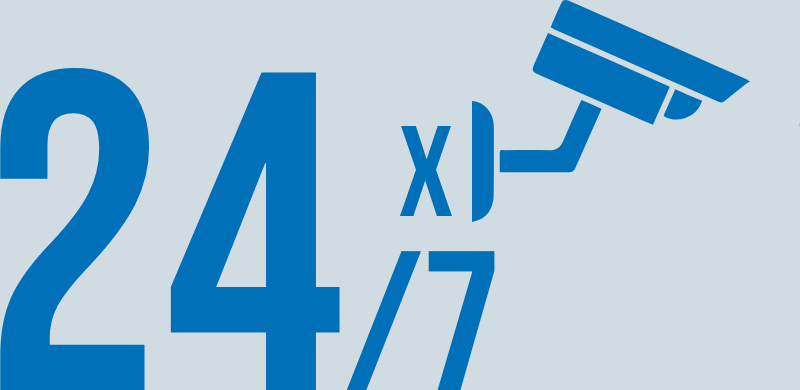
Continuous surveillance and monitoring by the Operation Control Centre (OCC) keep stations secure.
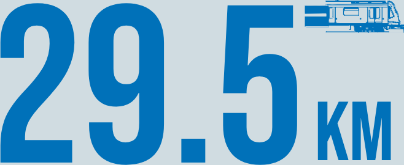
Connecting Silicon Island, KOMTAR, and Penang Sentral with alternating train routes for seamless coverage across Penang.
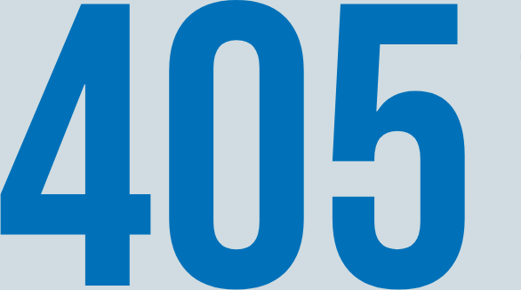
The LRT Mutiara Line can accommodate 405 passengers per train.
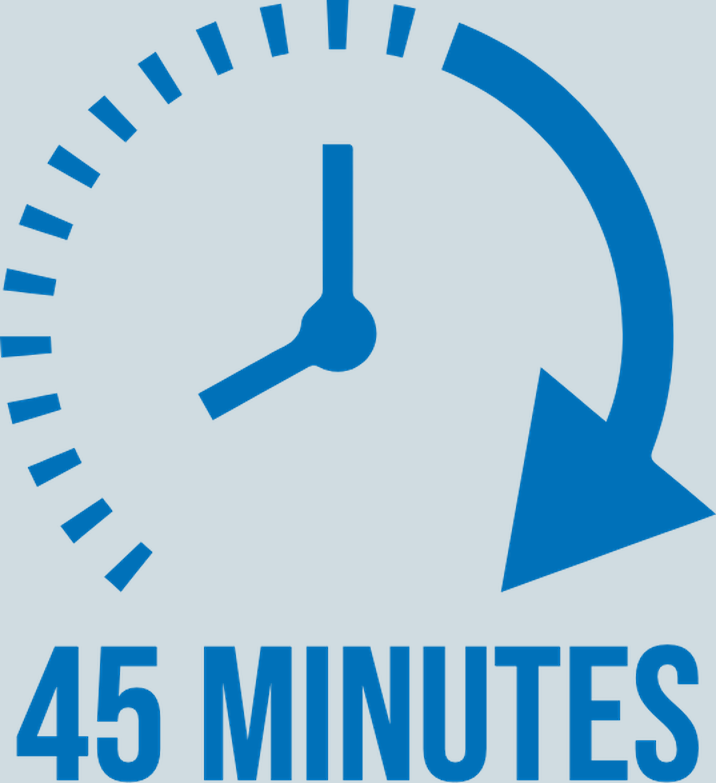
Average travel time — a full journey from Silicon Island takes about 45–49 minutes, depending on the destination.
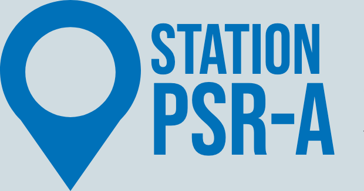
PSR-A Station on Silicon Island will seamlessly connect the reclaimed land to Penang, supporting the state's 2030 vision under the Penang Transportation Master Plan (PTMP).
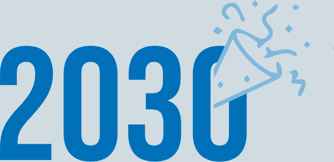
The actual construction works begins by 2025 and is expected to be completed by 2030.
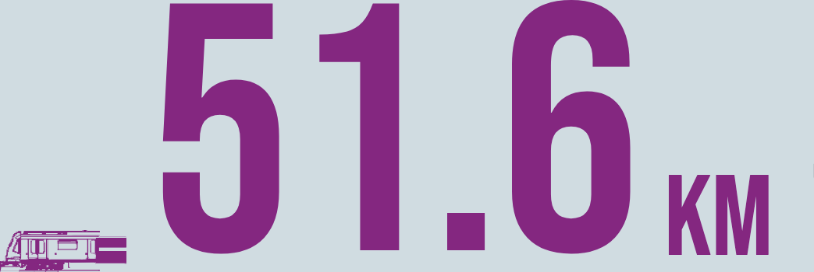
Forms an orbital loop around Kuala Lumpur, with 33 stations, including 7 underground, connecting to existing lines at 10 interchanges.
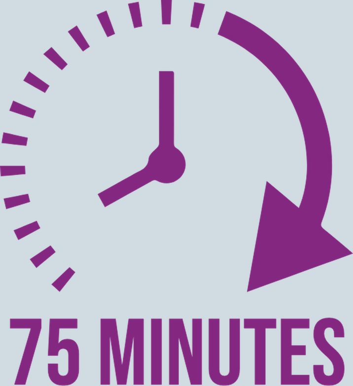
Average travel time — a full circle journey takes only 75 minutes.
Runs 11.9km underground; the rest of the loop is elevated.
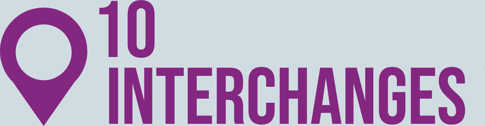
MRT3 connects commuters to the existing MRT, LRT, KTM and Monorail network through 10 interchange stations.
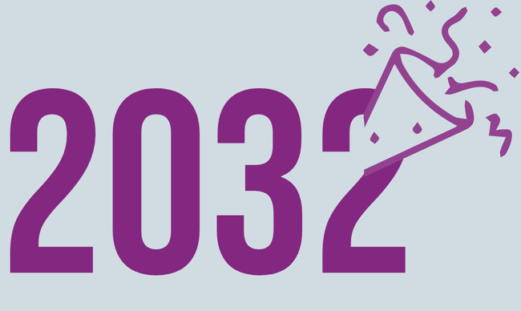
MRT3 is expected to be fully operational by 2032.
MRT Kajang Line
Interesting Features Of The Project
Accessibility Design
OKU friendly facilities
and Kajang
22 Elevated Stations
7 Underground Stations
per train.
park and ride
facilities
Discover More

Exceeding Expectations

A Catalyst For Transformation

SBK Line underground stations
Putrajaya Line
Interesting Features Of The Project
Accessibility Design
OKU friendly facilities
and Serdang
27 Elevated Stations
9 Underground Stations
per train.
park and ride
facilities
Discover More


Interesting Features Of The Project
Accessibility Design
OKU friendly facilities
and Kajang
22 Elevated Stations
7 Underground Stations
per train.
park and ride
facilities
Discover More


LRT Mutiara Line
The backbone of Penang’s Transport Master Plan (PTMP), the project marks a pivotal step in the state’s journey towards a modern, sustainable public transit.
MRT 3
Interesting Features Of The Project
Accessibility Design
OKU friendly facilities
and Kajang
22 Elevated Stations
7 Underground Stations
per train.
park and ride
facilities